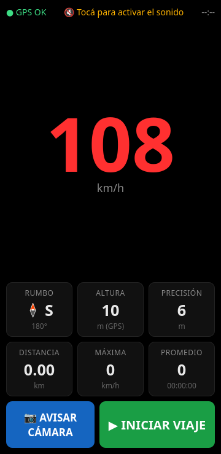
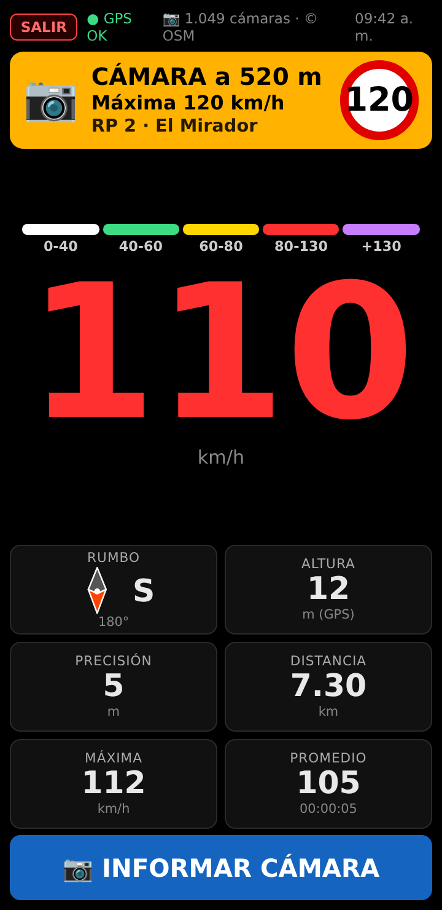
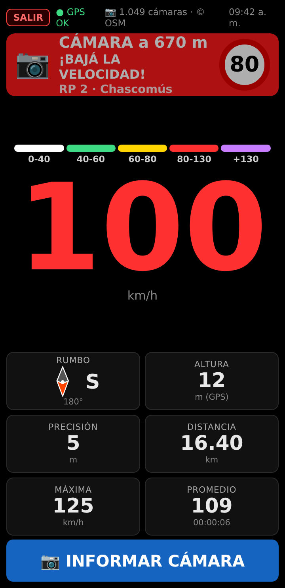
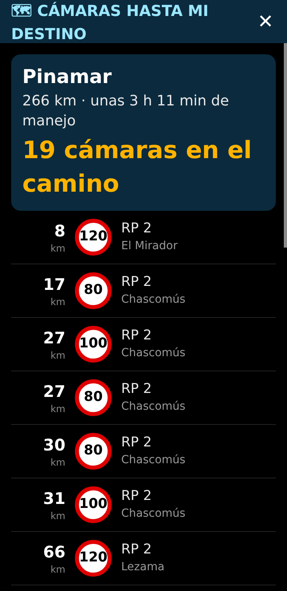
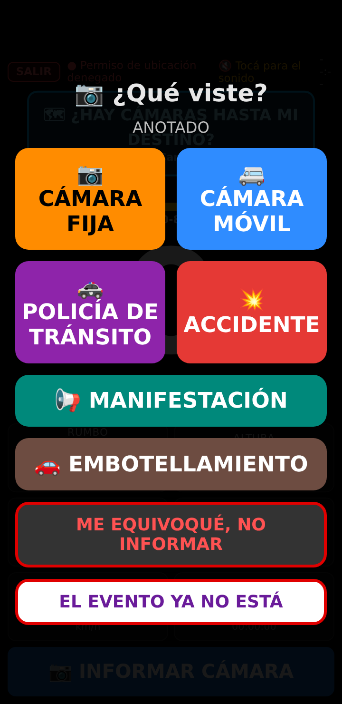
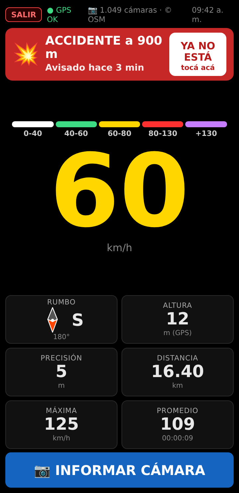

InfoCam
Avisa las cámaras de control de velocidad · Evite multas
Es un velocímetro en el celular que te avisa con voz y con un cartel antes de llegar a una cámara de control de velocidad,
y te dice la velocidad máxima. Se abre como una página y usa el GPS del celular. Para dejarlo como ícono, tocá la franja celeste INSTALAR INFOCAM de arriba.
Es gratis, no pide tus datos y funciona sin internet.
1Para empezar

- Abrí el link en Chrome (Android) o en Safari (iPhone).
- Cuando pregunte por la ubicación, tocá Permitir. Sin eso no hay GPS.
- Tocá la pantalla una vez. Ese toque habilita la voz y el pitido (el celular no deja hablar hasta que se lo toca).
En el iPhone además pregunta por "movimiento y orientación": tocá Permitir.
- Arriba a la izquierda tiene que decir ● GPS OK. Listo: ya avisa.
La distancia, la máxima, el promedio y el tiempo empiezan a contar solos desde que abrís InfoCam.
2Los colores de la velocidad
Los números grandes de la velocidad cambian de color según lo rápido que vas, para darte cuenta de un vistazo:
Blanco hasta 40 km/h, verde de 40 a 60, amarillo de 60 a 80,
rojo de 80 a 130 y lila arriba de 130.
Ojo: esos colores son siempre los mismos, haya o no cámara. La velocidad máxima de cada cámara la dice el
cartel de arriba (punto 3).
3Los avisos de cámaras

Unos 30 segundos antes de llegar a una cámara aparece un cartel amarillo con:
- a cuántos metros está,
- la velocidad máxima (en el círculo),
- la ruta y el lugar (por ejemplo RP 2 · El Mirador).
Y la voz dice: "Cámara de control de velocidad en El Mirador, a 500 metros. Máxima 120".

Si vas más rápido que la máxima, el cartel se pone rojo y titila, suena un pitido
y la voz dice "Bajá la velocidad". Cuando bajás, vuelve a amarillo.
Cuando pasás la cámara, el cartel desaparece solo.
Solo avisa las cámaras que están adelante, en el sentido en que vas, y andando a más de 10 km/h.
4¿Hay cámaras hasta mi destino? (opcional)

Antes de salir, si querés saber qué cámaras hay en el camino, tocá 🗺 ¿HAY CÁMARAS HASTA MI DESTINO?
(aparece arriba sólo cuando estás parado).
- Escribí adónde vas (por ejemplo Pinamar) y tocá BUSCAR.
- Elegí el lugar de la lista.
- Te muestra los km del viaje, el tiempo y todas las cámaras del camino en orden: a cuántos km de la salida está
cada una, la máxima, la ruta y el lugar.
No hace falta hacerlo: InfoCam te avisa igual cada cámara en el camino. Para buscar el destino hace falta internet;
la última lista queda guardada y se ve sin señal.
5¿Viste una cámara, un control o un accidente? Informalo

- Tocá el botón azul de abajo 📷 INFORMAR CÁMARA. En ese momento ya queda anotado el lugar.
- Elegí qué viste:
- CÁMARA FIJA: una cámara o medidor de velocidad que está siempre.
- CÁMARA MÓVIL: control de velocidad puesto ese día (de la policía o del municipio).
- POLICÍA DE TRÁNSITO: piden documentos o hacen el test de alcoholemia.
- ACCIDENTE: un choque o un vehículo accidentado en la ruta.
- MANIFESTACIÓN: un corte o una manifestación en el camino.
- EMBOTELLAMIENTO: tránsito trabado, autos parados o muy lentos.
- ME EQUIVOQUÉ, NO INFORMAR: no se manda nada.
- EL EVENTO YA NO ESTÁ: borra para todos la policía, el accidente, la manifestación o el embotellamiento avisados más
cerca (a menos de 1 km).
- La voz dice "Gracias…". Si no elegís nada, se manda igual cuando termina la cuenta que baja en el botón
ME EQUIVOQUÉ, NO INFORMAR (10): ese es el tiempo para arrepentirse.
Es anónimo: no se manda tu nombre ni tu teléfono, sólo el lugar y lo que viste.
Sin señal no importa: el aviso queda guardado en el celular y se manda solo cuando vuelve la señal.
Cada cámara informada se revisa antes de sumarla a la lista para todos.

Policía de tránsito, accidentes, manifestaciones y embotellamientos les aparecen enseguida a los que vienen para ese lado, durante una hora,
con un cartel y la voz: violeta la policía, rojo los accidentes y
verde las manifestaciones y marrón los embotellamientos. Así, entre todos, nos avisamos.
Cuando lo pasás, pregunta "¿Seguía?". Si ya no estaba, tocá YA NO ESTÁ en el cartel y se borra para todos.
Para ver los avisos de los demás hace falta internet.
✋ Manejando, solo un toque. Si vas con acompañante, que lo haga él. Nunca te distraigas del camino.
6Consejos
- La página tiene que estar en pantalla. Si entra una llamada, abrís WhatsApp o se apaga la pantalla, InfoCam
queda en pausa y no avisa. Al volver sigue solo.
- Sin internet también avisa. Las cámaras están guardadas en el celular y el GPS anda sin datos.
Sólo hace falta haber abierto InfoCam una vez con internet (o tenerla instalada con el ícono).
- La pantalla se mantiene encendida sola. Igual conviene tener el cargador puesto en viajes largos.
- Poné el celular en un soporte y con el volumen alto. En el iPhone, con la llave de silencio puesta el pitido puede no sonar.
- Si la página se recarga o la cerrás, la distancia, la máxima y el promedio vuelven a cero.
- Para salir, mantené apretado el botón rojo SALIR de arriba a la izquierda hasta que se
llene la barra (un toque corto no sale, así no se cierra sin querer).
- Si arriba aparece la franja verde HAY UNA VERSIÓN NUEVA, tocala estando parado: se actualiza sola.
7Tener en cuenta
- No están todas las cámaras, y alguna puede haber cambiado o ya no estar. Por eso es tan útil que nos avises las que faltan.
- Algunas cámaras no tienen cargada la máxima: el cartel dice "Sin dato de velocidad máxima".
- InfoCam es una ayuda. Respetá siempre las velocidades y las señales de la ruta.
8Las cámaras en una lista (PDF)
Las mismas cámaras que avisa InfoCam, en dos listas para mirar antes de salir, imprimir o pasar por WhatsApp.
En cada cámara, tocando la ubicación se abre en Google Maps.
Para encontrar una ruta, un partido o una localidad, buscala con la lupa del lector de PDF.
InfoCam · Cámaras en rutas Argentinas · Evite multas